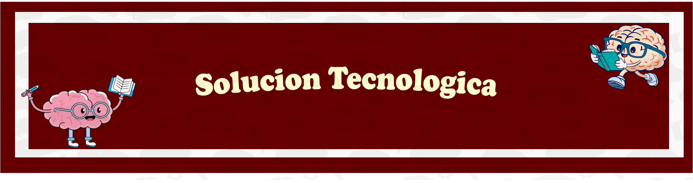
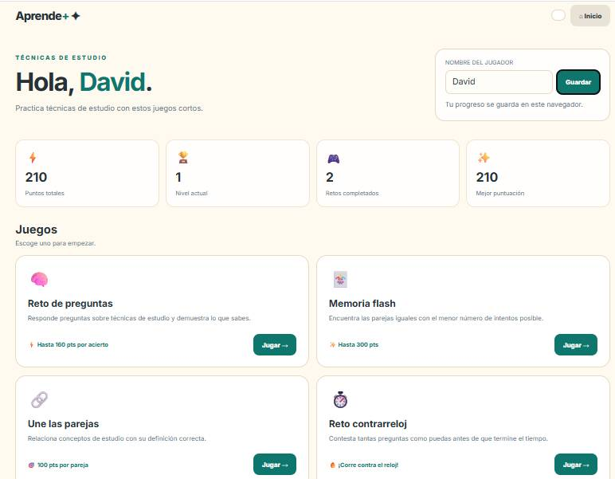

Nuestra solución tecnológica es una página web llamada Aprende+, creada para ayudar a los estudiantes a mejorar sus técnicas de estudio y, de esta manera, fortalecer su aprendizaje y rendimiento académico. A través de minijuegos educativos, los estudiantes pueden practicar la memoria, la concentración, la comprensión y la organización del conocimiento. Esta herramienta busca responder a la problemática de las dificultades de aprendizaje y los hábitos de estudio inadecuados, ofreciendo una alternativa interactiva que motive a los estudiantes a aprender de forma más dinámica.

Vista previa del panel de control de Aprende+En conclusión: Aprende+ busca demostrar que el uso adecuado de las técnicas de estudio puede favorecer el aprendizaje y contribuir al rendimiento académico de los estudiantes, mediante una herramienta tecnológica que combina la práctica, la motivación y el aprendizaje interactivo.